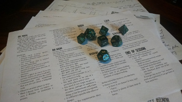

Hi there, everyone. My name is James Hamilton- I'm a web developer. Well- perhaps that's a misdirection. I build things. Websites are only one of those things. If anything, I love to build stories and experiences. I've found that code is an excellent medium to do so- it's language that is given shape and visual expression.
I’m a husband, board gamer , roleplayer, teacher, Cajun, and Texan. If that’s not a dangerous combination, I’m not really sure what is. I spent my formative years chasing the lofty ideals of academia- in particular studying Greek and Latin. This passion took me out of the south to Columbus, Ohio- my current home- where I met my wife and have established a life here.
In my free time, I’m almost always building things. Sometimes I design my own board games or overly complicated inserts for components of other people’s board games (I’m apparently good enough to be commissioned on these). Sometimes I paint miniatures- there's nothing like painting detail on a 2 inch tall piece of metal.
Most relevant, I build worlds. I do this in almost all my activities. For those I teach, I build a world out of the words of the long dead. With friends, I create my own worlds through roleplaying games like Dungeons and Dragons. If you want- I’ll build a world for you too, constructed of code and pictures.
I have taken numerous courses online to fine tune my coding skills. I am proficient in HTML, CSS, and Javascript with a firm understanding of Responsive Web Design and Mobile First Web Design. To learn more about what I can offer you, click here .
There are plenty of web developers on the internet. I count a fair share of them among my friends and twitter followers. Before I write about my skills for web development, I'd like to take a minute to talk to you about the skills I've gained outside. These are the unique offerings I can bring to you.
As an academic, I've learned that learning never stops. I've presented at national conferences numerous times, earned an advanced degree, and taught many wonderful people. By teaching at a university level for the past decade, I've learned how people learn and communicate. I believe that I excel in these regards- I will be able to tell you, in simple English, what I'm doing at every step of the way.
I'm creative. This should almost go without saying: I've spent years talking about monster and made that into a paying job. I've written numerous essays on texts which have been studied for two millenia- finding new and novel ways to frame them and say something exciting about them. I believe these skills transfer extremely well into building websites: I can see your business for what it is and find new ways to attract customers by showing it at a different angle.
As far as web development skills are concerned, for HTML5, CSS3, and Javascript, I'm your guy. I've taken courses all across the internet on these topics- at well known online schools like Team Treehouse, Codeschool, and Udemy. I also have training in jQuery, AngularJS, Responsive and Mobile First Web Design practices.